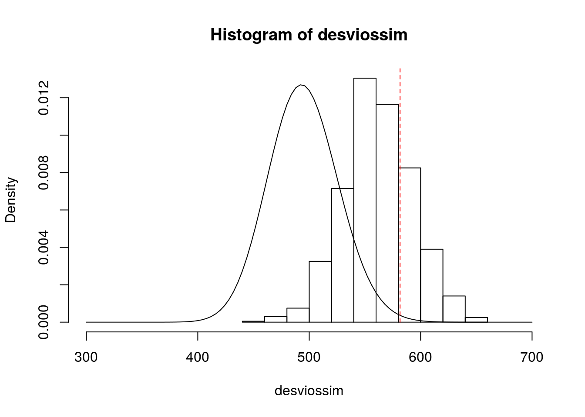
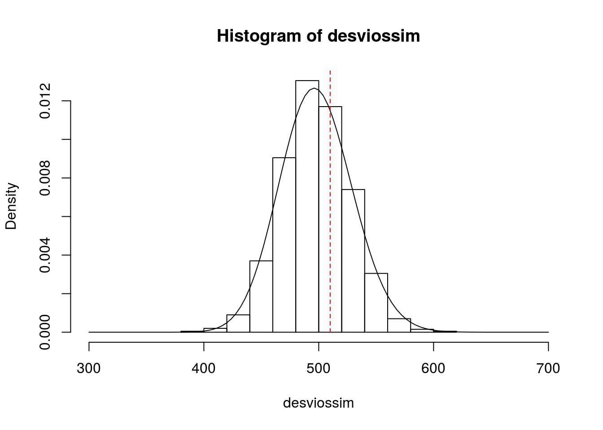

Avaliação da qualidade do ajuste usando simulação (ilustração). Ao invés de utilizar a distribuição qui-quadrado assintótica como referência para testar a qualidade do ajuste com base na deviance, vamos obter a distribuição de referência para o teste via simulação.
## idade sexo usop anosest claims
## 1 41 Fem Estrada 10 3
## 2 39 Masc Cidade 16 0
## 3 46 Masc Estrada 5 1
## 4 45 Fem Cidade 9 0
## 5 41 Fem Cidade 12 1
## 6 33 Masc Estrada 8 7ajuste1 <- glm(claims ~ ., family = poisson, data = dados1)
# Ajuste do GLM do número de sinistros pelo resto.
print(ajuste1) ##
## Call: glm(formula = claims ~ ., family = poisson, data = dados1)
##
## Coefficients:
## (Intercept) idade sexoMasc usopEstrada anosest
## 2.699698 -0.058708 -0.016386 0.257935 -0.004463
##
## Degrees of Freedom: 499 Total (i.e. Null); 495 Residual
## Null Deviance: 733.8
## Residual Deviance: 581.5 AIC: 1579## 1 2 3 4 5 6 7
## 1.6585675 1.3802570 1.2440128 1.0178051 1.2700958 2.6331007 0.9792632
## 8 9 10
## 1.1783287 1.3499300 1.6099097## 1
## 1.658567# Valor ajustado pelo modelo para o primeiro indivíduo na amostra
devobs <- ajuste1$deviance; devobs ## [1] 581.5254## [1] 0# Número de sinistros simulado para o 1º indivíduo com base no modelo ajustado.
yest <- rpois(500,fit); yest ## [1] 2 3 1 0 1 1 0 1 3 2 1 0 0 3 3 2 2 4 1 1 2 0 0 3 0 1 1 0 2 2 3 1 1 0 3
## [36] 1 1 2 2 4 2 0 3 3 1 3 3 1 2 0 1 1 2 1 3 4 2 0 1 2 0 1 2 1 6 2 4 0 1 4
## [71] 8 1 0 1 1 0 0 5 3 1 3 3 3 0 3 1 0 0 4 1 0 2 3 5 0 2 1 2 4 1 6 1 3 2 1
## [106] 0 5 1 2 1 1 2 0 2 0 1 1 0 1 2 2 0 0 0 4 3 2 3 1 3 2 1 5 3 3 4 2 1 3 2
## [141] 7 4 0 2 0 0 1 1 0 1 1 3 0 0 2 0 6 1 0 1 1 2 2 3 0 3 4 3 1 1 1 1 1 1 1
## [176] 1 2 2 1 1 1 2 1 2 1 3 2 0 0 1 0 0 4 2 1 1 2 1 4 3 3 3 8 2 5 0 0 0 2 0
## [211] 4 3 1 2 1 1 2 1 0 2 0 2 3 3 4 1 1 1 2 0 1 4 1 0 0 0 0 1 3 4 7 0 4 0 2
## [246] 2 4 0 2 5 0 2 1 1 4 2 4 2 2 1 0 2 3 2 0 4 3 3 4 2 6 5 0 2 4 0 1 3 2 2
## [281] 3 1 1 1 4 1 1 2 1 3 1 2 5 1 7 2 0 1 5 0 2 1 3 3 2 2 0 0 1 1 2 0 1 1 5
## [316] 3 1 3 3 6 2 1 2 2 2 2 1 2 1 1 1 3 0 3 1 2 3 2 3 1 4 0 2 0 2 3 0 0 1 4
## [351] 4 1 1 1 2 0 5 4 2 0 5 4 1 1 5 0 1 0 0 2 1 1 1 3 1 3 2 2 4 2 1 0 2 3 0
## [386] 1 2 2 4 0 3 1 1 2 2 1 2 0 3 5 2 0 2 4 4 3 3 1 2 4 2 5 2 4 1 1 4 1 3 1
## [421] 3 3 3 2 2 1 0 1 0 2 1 0 1 2 4 6 0 0 5 1 2 4 0 2 1 1 0 2 0 6 1 0 0 3 1
## [456] 3 0 2 3 2 1 4 0 0 2 1 2 3 1 6 6 2 4 3 2 1 3 5 1 0 2 1 0 2 0 2 4 4 0 2
## [491] 1 1 6 2 5 1 2 1 0 5## [1] 551.165desviossim <- numeric()
# desviossim vai armazenar os desvios gerados nas 1000 simulações.
desviossim[1] <- dev1
# Armazenando a primeira simulação.
for(i in 2:1000){
yest <- rpois(500,fit)
ajuste1est <- glm(yest ~ ., family = poisson, data = dados1)
desviossim[i] <- ajuste1est$deviance
}
head(desviossim, n = 10)## [1] 551.1650 518.9360 574.0000 519.9429 551.7603 579.2768 572.7113
## [8] 541.3222 622.4476 552.7068Antes do passo 5, vamos sobrepor a distribuição simulada para os desvios e a distribuição qui-quadrado (n-p)
hist(desviossim, freq=F, xlim=c(300,700))
curve(dchisq(x,495), from=300, to=700, add = T)
# Claramente, a aproximação com a distribuição qui-quadrado é bem ruim
lines(c(devobs,devobs), c(0,1), lty=2, col='red') 
Representando o valor observado para a deviance.
## [1] 0.249Logo, não há evidências de que o modelo esteja mal ajustado.
Já se usássemos a aproximação com a distribuição qui-quadrado:
## [1] 0.004329773Pela aproximação com a qui-quadrado, rejeitariamos o modelo.
Vamos ver um segundo exemplo, em que as contagens (e as médias) são maiores.
Gerando valores para x e y
set.seed(4159)
x <- round(rnorm(500, 10, 2))
y <- rpois(500, exp(x))
ajuste1 <- glm(y ~ x, family = poisson)
fit1 <- fitted(ajuste1)
devobs <- ajuste1$deviance
desviossim <- numeric()
for(i in 1:1000){
yest=rpois(500,fit1)
ajuste1est=glm(yest~x,family=poisson)
desviossim[i]=ajuste1est$deviance
}
head(desviossim, n = 10)## [1] 503.7914 487.0985 474.3885 459.2264 476.6905 484.1637 511.5090
## [8] 466.4037 455.8270 484.5088hist(desviossim, freq = F, xlim = c(300,700))
curve(dchisq(x,498), from=300, to=700, add=T)
lines(c(devobs, devobs), c(0,1),lty = 2,col = 'red') 
# Representando o valor observado para a deviance.
psimulado <- sum(desviossim>devobs)/1000; psimulado ## [1] 0.337# Logo, não há evidências de que o modelo esteja mal ajustado.
# Já se usássemos a aproximação com a distribuição qui-quadrado:
paproximado <- pchisq(devobs, 495, lower.tail = F); paproximado ## [1] 0.3112201